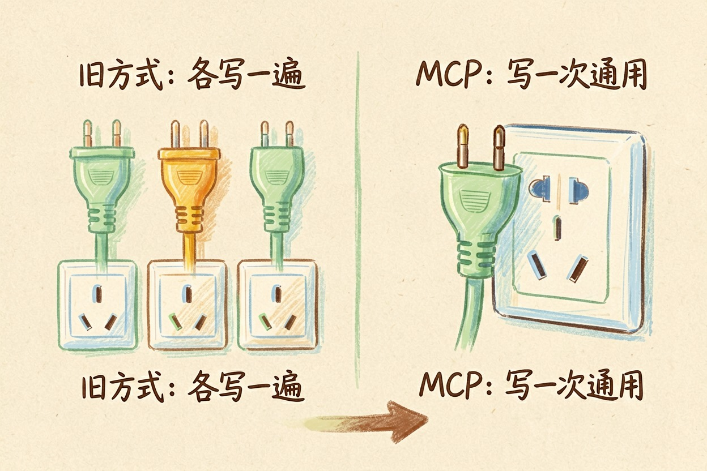
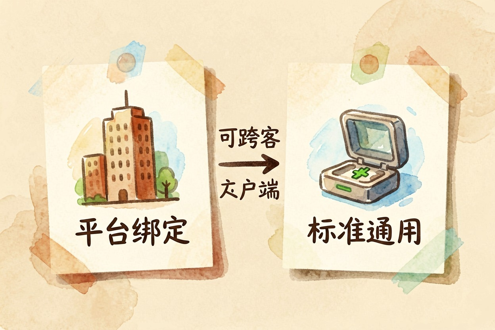
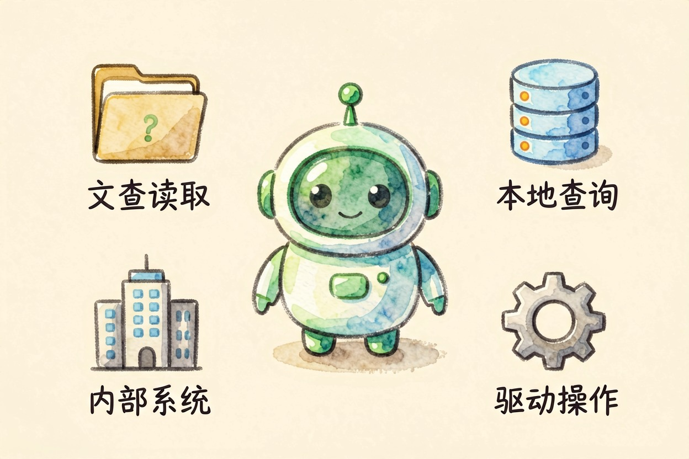

MCP 协议是什么？给 AI 装上万能插口这件事 — Learntide
以前每个客户端都要单独适配一遍工具，现在换成同一种插口。省事之外，权限该收窄的地方一点不能松。
mcp协议是什么：给 AI 应用统一插口

mcp协议是什么？它是一套让 AI 应用连接外部数据和工具的通用接口约定，英文全称 model context protocol。一个工具只要按这套标准写一次，支持它的客户端都能接上。
打个比方。以前每台设备配一根专用线，抽屉里塞满了对不上的接头。现在统一成同一种插口，线还是那根线，来回折腾的次数少了。
它到底解决了哪个麻烦

在这套约定出现之前，每个 AI 客户端有自己的一套扩展方式。想让助手读你的本地笔记，得为这个客户端单独写一遍；换一个客户端，再写一遍。
对开发者，这是重复劳动。对普通用户，后果是能用的工具永远不够多，好东西被锁在别家产品里。
MCP 把这层关系拆成两边。一边是提供数据和能力的服务端，一边是发起请求的客户端，中间用同一套消息格式对话。
{
"mcpServers": {
"notes": {
"command": "npx",
"args": ["-y", "@modelcontextprotocol/server-filesystem", "D:/notes"]
}
}
}这是客户端里常见的配置写法：声明一个服务、指定启动命令、把可访问的范围限定在某个文件夹。改这几行，助手就多了一双读本地笔记的眼睛。
mcp是什么意思，和插件差在哪

插件通常绑在某个平台上。平台定规则、管审核、决定上下架，你写的插件也只能在这家用。
MCP 反过来。标准公开，谁都能实现。同一个服务，今天接这个客户端，明天接那个，改改配置就行。
另一个差别在运行位置。不少 MCP 服务直接跑在你自己的机器上，数据不必先上传到别人服务器再绕回来。处理敏感资料时，这一点比功能多少更要紧。
普通用户什么时候会碰到它
如果你只在网页里聊天，短期内基本碰不到。它主要出现在桌面客户端和开发工具里。
常见用法有这么几类：让助手读写本机文件、查本地数据库、连公司内部系统、驱动浏览器做重复操作。共同点是「模型要用到你这边的东西」，而不只是聊天。
上手门槛也在降。多数客户端已经把它做成配置文件里加几行，或者界面上点一个开关，不再需要自己写代码。
别把授权范围开得太大
方便的另一面是权限。一个服务能读整块硬盘，和只能读一个文件夹，风险完全是两回事。配置时把路径收到最窄，能只读就别给写权限。
来源同样要看。第三方服务端本质上是跑在你机器上的一段程序，来路不明的就别装，装之前扫一眼它的开源仓库和更新记录。
还有一条容易忽略：模型看到的内容会随请求一起传出去。接内部系统前，先确认哪些字段可以出门。
把范围和来源这两件事想清楚，mcp协议是什么带来的便利才不会反过来变成隐患。
本文信息核对于 2026-08-08。AI 产品的价格、免费额度与功能变动频繁，实际以各工具官网当前说明为准。